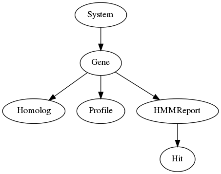

Contents:
Txsscan is a program aiming at detecting protein secretion systems in diderm bacteria (T1SS-T6SS), using Hmmer to perform homologs searches with provided proteic profiles. Criteria for system detection includes gene quorum, and genomic colocalization. These criteria can be tuned by the user.
- Its flexible architecture also allows the user :
- to provide its own profiles for a new system,
- to define its own decision rules for system inference.
The objects Systems, Gene, Profile must be created via theire respective factory. This allows to have only one object System, Gene or Profile for a given name. The Homolog objects are composed of a gene and 2 other properties “gene_ref and “aligned”. All Gene methods/attributes can be applied to Homolg objects.
